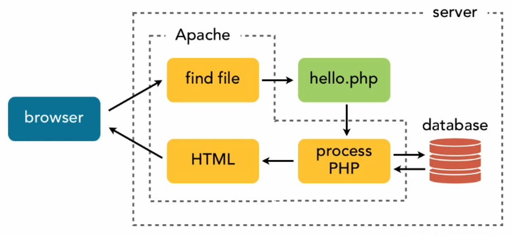

Introducción
En las secciones anteriores, hemos sentado las bases del desarrollo en entorno servidor y hemos explorado la sintaxis y las herramientas fundamentales de PHP: variables, arrays, operadores, funciones y directivas. Hemos aprendido las "palabras" y la "gramática" del lenguaje. Ahora, es el momento de empezar a escribir "historias" completas, uniendo todas esas piezas para construir lo que es el objetivo final de este curso: una aplicación web funcional.
Una aplicación web va más allá de una simple página que muestra la fecha actual. Se caracteriza por su interactividad, su capacidad para recordar información y su habilidad para gestionar datos. Una verdadera aplicación escucha al usuario, procesa sus peticiones y le ofrece una experiencia personalizada.
En esta nueva sección, daremos el salto de escribir scripts aislados a diseñar sistemas cohesivos. Nuestro viaje nos llevará a través de los pilares de cualquier aplicación web:
- Recibir y procesar la entrada del usuario a través de formularios HTML.
- Mantener el estado y recordar a los usuarios a través de diferentes páginas mediante el uso de sesiones y cookies.
- Conectar nuestra aplicación a una base de datos para almacenar, modificar y recuperar información de forma permanente.
Al finalizar esta sección, habrás pasado de entender los conceptos de PHP a aplicar ese conocimiento para crear aplicaciones dinámicas, interactivas y basadas en datos desde cero.
El Ciclo de Vida de una Petición Web
Construir una aplicación web consiste en gestionar de forma ordenada el flujo de información entre el cliente y el servidor. Este flujo, conocido como el ciclo de vida de una petición, puede desglosarse en una serie de pasos lógicos.

Todo comienza con la petición del usuario. Cuando un usuario hace clic en un enlace, escribe una URL o envía un formulario, su navegador genera una petición HTTP y la envía al servidor. Esta petición es el disparador, la señal que pone en marcha toda la maquinaria del backend.
Una vez que la petición llega al servidor, el primer paso es el enrutamiento. El servidor web examina la URL solicitada y determina qué script de PHP es el responsable de gestionarla. En una aplicación sencilla, esto puede ser una correspondencia directa, donde la URL .../contacto.php ejecuta el fichero contacto.php. En aplicaciones más complejas construidas con frameworks, un enrutador centralizado se encarga de dirigir la petición al controlador adecuado.
A continuación, comienza el procesamiento de la lógica de negocio. Este es el corazón de la aplicación. El script de PHP se ejecuta y realiza las tareas necesarias: valida los datos de entrada que ha enviado el usuario (por ejemplo, los del $_POST), aplica las reglas de negocio (¿es correcto el login?, ¿hay stock del producto?), y se comunica con la capa de persistencia, normalmente una base de datos, para leer o escribir información.
Tras completar la lógica, la fase final es la generación de la respuesta. El script recopila los datos que necesita mostrar (el nombre del usuario, la lista de productos, etc.) y los utiliza para construir un documento HTML. Generalmente, esto se hace incluyendo ficheros de plantilla (como una cabecera y un pie de página) y "rellenando" los huecos con los datos dinámicos.
Finalmente, el servidor envía este documento HTML recién generado de vuelta al navegador del cliente como el cuerpo de una respuesta HTTP. El navegador interpreta el HTML y renderiza la página final para el usuario. Este ciclo —petición, enrutamiento, procesamiento y respuesta— es la base sobre la que se construyen todas las aplicaciones web dinámicas.
El Paso de Parámetros
Para que una aplicación web sea verdaderamente interactiva, no basta con que el servidor envíe páginas dinámicas; el cliente también debe poder enviar información de vuelta al servidor. Un script de PHP a menudo necesita "parámetros" o datos de entrada para poder realizar su trabajo: ¿qué producto queremos ver?, ¿cuál es el término de búsqueda?, ¿qué comentario quiere publicar el usuario?
El paso de parámetros es el mecanismo por el cual el navegador del cliente envía estos datos al script del servidor como parte de una petición HTTP. Existen dos métodos principales para enviar esta información, y es fundamental entender la diferencia entre ambos: el método GET y el método POST.
Parámetros por GET
El método GET envía los parámetros como parte de la propia URL. Los datos se añaden al final de la dirección en una cadena de texto llamada "query string". Esta cadena siempre comienza con una interrogación (?) y los pares de clave=valor se separan entre sí por un ampersand (&).
Cuando una petición llega al servidor, PHP automáticamente procesa esta "query string" y pone todos los pares clave-valor a nuestra disposición en el array superglobal $_GET. Por ejemplo, imagina que un usuario hace clic en un enlace que lleva a la siguiente URL https://ejemplo.com/producto.php?id=123&categoria=libros, el script producto.php puede acceder a estos parámetros así:
<?php
$producto_id = $_GET['id']; // Contendrá el valor 123
$categoria = $_GET['categoria']; // Contendrá el valor 'libros'
echo "Mostrando el producto con ID " . $producto_id . " en la categoría de " . $categoria;
?>
El método GET posee un conjunto de características bien definidas que determinan su uso correcto en el desarrollo web. La más distintiva es la visibilidad de sus parámetros; al ser parte de la URL, los datos enviados son visibles para el usuario en la barra de direcciones, quedan registrados en el historial del navegador y en los logs del servidor. Esta transparencia lo hace completamente inadecuado para transmitir información sensible como contraseñas o datos personales.
Sin embargo, esta misma visibilidad es la que le otorga una de sus mayores ventajas: la capacidad de que una URL sea guardada en marcadores y compartida fácilmente, permitiendo a un usuario enviar a otro un enlace directo a una página de resultados de búsqueda o a un producto específico.
No obstante, existen limitaciones técnicas. Las URLs tienen una longitud máxima impuesta por los navegadores y servidores, lo que impide el envío de grandes volúmunes de datos a través del método GET.
Finalmente, y desde un punto de vista arquitectónico, la propiedad más importante de una petición GET es su idempotencia. Esto significa que debe ser una operación "segura", de solo lectura. Realizar la misma petición GET múltiples veces debe producir el mismo resultado y nunca debe alterar el estado de los datos en el servidor. Por este motivo, es el método apropiado para solicitar recursos, realizar búsquedas o filtrar información, pero nunca para acciones que modifiquen datos, como registrar un usuario o eliminar un producto.
Parámetros por POST
El método POST envía los parámetros en el cuerpo del mensaje de la petición HTTP, de forma separada a la URL. Los datos no son visibles para el usuario en la barra de direcciones. PHP procesa estos datos y los pone a nuestra disposición en el array superglobal$_POST.
Este método es el que se utiliza casi siempre para enviar los datos de un formulario HTML, por ejemplo, en un formulario HTML para iniciar sesión:
<form action="login.php" method="post">
Usuario: <input type="text" name="usuario"><br>
Clave: <input type="password" name="clave"><br>
<button type="submit">Entrar</button>
</form>
Por su parte, el script login.php podría acceder a los datos del formulario de la siguiente manera:
<?php
$nombre_usuario = $_POST['usuario'];
$password = $_POST['clave'];
echo "Intentando iniciar sesión con el usuario: " . $nombre_usuario;
?>
A diferencia del método GET, las peticiones POST encapsulan los parámetros en el cuerpo del mensaje HTTP, lo que les confiere una naturaleza fundamentalmente distinta. Su principal característica es la invisibilidad de los datos; al no viajar en la URL, la información no queda expuesta en la barra de direcciones, en el historial del navegador ni en los logs de acceso del servidor de forma tan evidente. Esta cualidad lo convierte en el método estándar y obligatorio para enviar cualquier tipo de información sensible, como contraseñas, datos personales o información financiera.
Esta transmisión de datos a través del cuerpo de la petición también elimina las restricciones de tamaño asociadas a las URLs. En la práctica, esto significa que el método POST no tiene un límite de tamaño significativo, lo que le permite transportar grandes cantidades de texto y lo convierte en el único método viable para la subida de ficheros al servidor.
Finalmente, la característica más importante desde el punto de vista del diseño de software es que las peticiones POST no son idempotentes. Están diseñadas explícitamente para cambiar el estado de los datos en el servidor. Cada vez que se realiza una petición POST, se espera que ocurra una acción: la creación de un nuevo usuario, la inserción de un comentario, la realización de una compra o la modificación de un registro. Debido a que estas acciones alteran los datos, no pueden ser guardadas en marcadores y los navegadores advierten al usuario antes de reenviar una petición POST para evitar duplicar la acción accidentalmente.